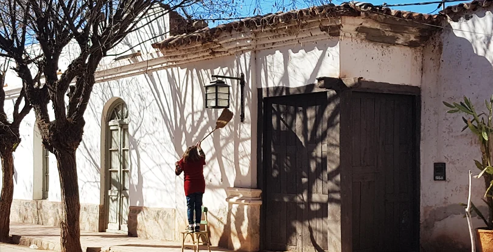

Una mirada periodística y lenguaje cinematográfico aplicados a la imagen y al relato audiovisual.
Ver TrabajosFormación académica y trayectoria en el medio audiovisual
Soy Licenciado en Periodismo recibido en la UNDAV y actualmente continúo mi especialización cursando la Licenciatura en Artes Audiovisuales en la UNA.
Mi experiencia profesional abarca el campo de la fotografía fija, la realización de documentales y la dirección/montaje en videoclips musicales. Combino el rigor en la investigación periodística con una sólida sensibilidad estética y técnica en el lenguaje cinematográfico y la edición de video.
Selección de proyectos de fotografía y registro visual

Registro fotográfico en locación, explorando la estética urbana y texturas arquitectónicas.
Iluminación controlada y dirección de arte en sesiones fotográficas conceptuales.
Realización, dirección de fotografía y montaje de video
Videoclip de música urbana. Labores de rodaje, dirección y montaje.
¿Tenés un proyecto en mente? Hablemos.
Disponible para propuestas en dirección de fotografía, realización audiovisual, cobertura periodística y montaje.
Enviar Mensaje